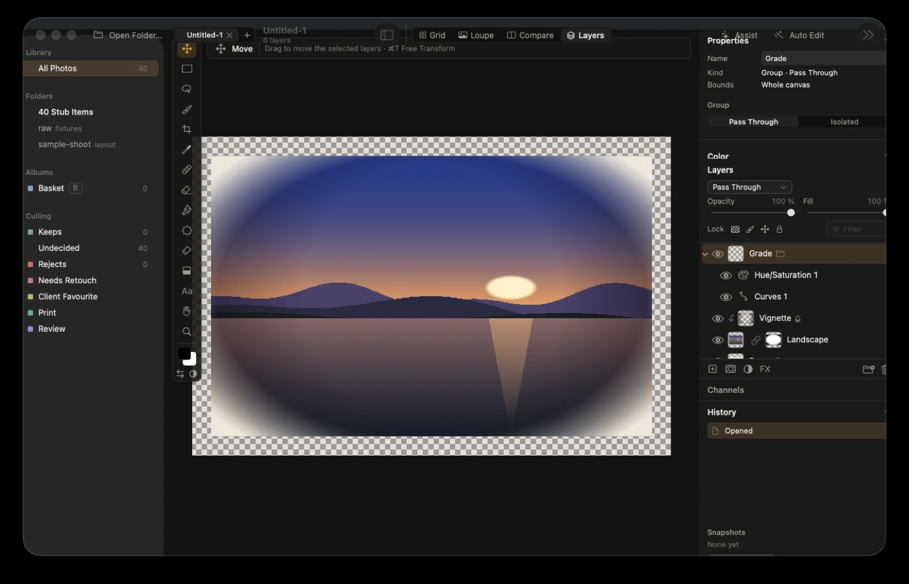

Three visual directions, each shown across the five jobs a photographer actually does. Switch the direction and the journey to compare them. Every screen uses real photos rendered by the Tessera engine from the project's test raws.
Lightroom splits the job into Library, Develop, Map, Book, Slideshow, Print and Web, and Photoshop is a separate app. Tessera keeps one window with two contexts. Library holds Grid, Loupe, Compare and Review. Edit holds Develop, Masks and Layers as fixed tabs over the same document. Both share the selection, filmstrip, history and command palette, and moving between them never exports or round-trips a file.
Import, cull, rate, group into stacks and people. Keyboard first: P keep, X reject, arrows move, space zooms to 100 %. AI explains its suggestions and never decides for you.
Raw develop for one photo or many. Masks are a first-class panel, not a hidden tool. Batch edits sync by category and show a review queue for photos that drift from the reference.
Layers, selections, retouch, type and filters. A raw file placed in a document stays a Develop layer, so its sliders open right in the layer inspector.
GPT-6 Astra read the app and engine paths end to end and re-ran what could be measured without taking over the screen. Engine benchmarks were already quick (sliders under 12 ms at screen level), but those numbers stop before a frame reaches the screen. The time goes to work done on the interface thread and to caches that do the expensive work before checking whether they need to.
| # | What happens | What you feel | Fix |
|---|---|---|---|
| 1 | The interface thread waits on the database. Opening a library, searching, focus changes and Select All call the catalog synchronously. | The grid appears late; typing in search or selecting many photos stutters. | M2-54 running |
| 2 | Cached thumbnails are decoded again before the cache is checked. A JPEG hit still reads, decodes and re-encodes the original. | Reopening a folder is nearly as slow as the first time. | M2-55 running |
| 3 | Every cache write scans the whole cache folder while holding the lock readers need. | Thumbnails fill in slower and slower as the cache grows. | M2-55 running |
| 4 | Layer styles recompute the full canvas once per tile. A 20 MP image has 330 tiles. | Adding a drop shadow can freeze a document for seconds. | M5-31 running |
| 5 | Automatic Upright can run a full-resolution analysis inside a slider update on the interface thread. | A slider hangs while the render readout claims it was fast. | Next wave |
| 6 | Layered documents render the whole canvas instead of the visible area. | Zooming to 100 % on a large document feels heavy. | Machine B |
| 7 | Background thumbnails can occupy every worker. Priorities order the queue but can't pause running jobs. | The loupe and sliders lag while you scroll or while analysis runs. | Next wave |
| 8 | The hidden loupe compiles its Metal shaders at launch on the interface thread. | The first window is slow even before you open a photo. | M2-53 running |
Not the cause: the grid is already a reusable native collection view, release builds are optimized, and there is no logging storm. Swapping to SwiftUI everywhere or to a web stack would not fix any row above. The first package adds timing from input to pixels on screen, so every fix is measured the way you experience it.
GPT-6 Astra hosted the real app views in background windows at 1280 × 800, 1440 × 900 and 1728 × 1117, captured them without taking the screen, and traced each overlap to a file and line. At 1280 × 800 the layered-document view asks for 1318 × 817 points inside a 1280 × 748 area, so the whole panel tree is placed 34 points up and 19 points left, under the toolbar and past the window edge.

Properties, Layers, Channels, History and Snapshots each reserve a minimum height in one column that can't scroll. Together they are taller than a laptop window, so the layout overflows instead of shrinking.
Menus and keyword chips are forced to their ideal width, and some truncate by counting characters instead of measuring text. The slider draws its label and value with no gap between them, so "Highlights" and "−100" touch at narrow widths.
The existing lint enforces colours, fonts and spacing, but nothing checks that a view fits its window. Every overlapping screen passed it.
| # | Fix | Owner |
|---|---|---|
| 1 | Shell never overflows the window. Content respects the toolbar's safe area; panels give up width in a fixed order (library sidebar first, then inspector, then filmstrip); shared menus, chips and sliders measure their text and reserve gaps. | M2-56 running |
| 2 | Document inspector budgeted or tabbed. Properties, Layers, Channels, History and Snapshots stay reachable at the smallest window, which is also what the redesign's inspector tabs do. | Machine B, after M2-56 |
| 3 | A layout test that fails the build. Every screen is rendered in background windows at four sizes in light and dark, and the test fails if any region leaves the window or two controls overlap. | M2-56 starts it |
A web stack would not help. React with CSS can overflow in exactly the same ways, and a GPU photo viewer, colour management and HDR still need native code. The recommendation is to keep Rust, Metal, AppKit and SwiftUI, and fix the layout rules and tests.
Chrome can be warm or tinted, but the surround next to the photo is always a neutral dark, mid or light grey, chosen separately from the app's appearance.
AI proposals are outlined and say Suggested. Decisions you made are filled. Turning Assist on never re-sorts the shoot or moves your place.
Batch actions say how many photos they touch, Undo names what it will undo ("Undo Batch edit: 38 photos"), and a single key never changes photos you can't see.
Comfortable is the default with 13 pt labels and hints. Compact tightens rows for professionals. There is no separate consumer and pro edition.
Today, Edit in Layers bakes the raw into a 16-bit pixel layer. Until live raw layers ship, the command should say it creates a rendered copy; the mockup shows the target, a Develop layer you can reopen.
If a feature needs a model that isn't installed, export asks before it writes files without it, and one Settings page lists every model, its size and whether it runs on this Mac.
The library sidebar with culling counts stays visible while you edit layers, and the inspector stacks Properties, Color, Layers, Channels, History and Snapshots in one column. Each mode here shows only the panels its job needs.
The Remove options bar clips its last control ("Remove Distract…") and runs into the tool rail. Here the options bar keeps its three most-used controls and moves the rest into More, so nothing clips at any width.
Coloured culling labels, filled buttons and bordered fields all carry similar weight. Here the accent marks only the current selection or the primary action, and the photo sits on a neutral surround you can judge colour against.